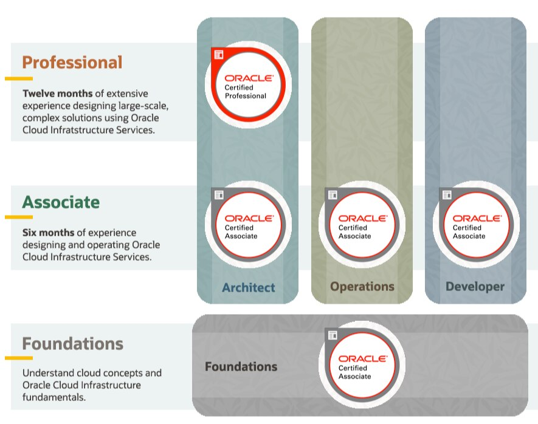
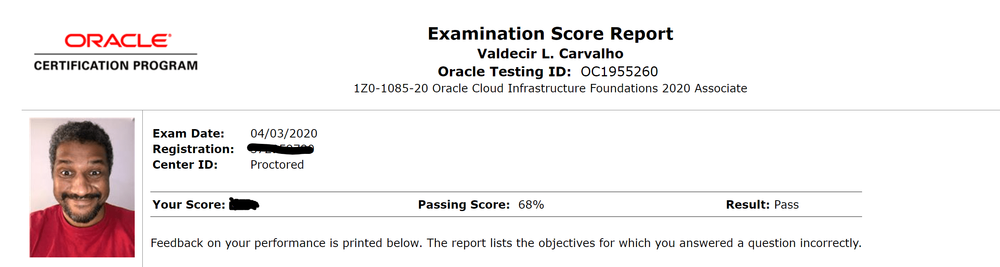

Certificação Oracle Cloud Infrastructure 2020 Foundations Associate - Como foi a prova
Blog Oracle CertificaçãoCompartilhe esse post nas redes sociais...
Olá Homelabers!
Antes de mais nada, você não vai encontrar nenhum DUMP ou respostas da prova aqui! Se é isso que você veio procurar, está no lugar errado! E por favor, nem adianta me pedir! Se tem uma coisa que eu abomino é DUMPEIRO
Post atualizado em 13/04/2020
Na última sexta-feira, 03/04 fiz a prova Oracle Cloud Infrastructure 2020 Foundations Associate e muita gente me perguntou como foi o exame online, como me preparei, etc.
A idéia desse post é contar minha experiência, impressões e o material que utilizei para me preparar para a prova.
Se você caiu de paraquedas nesse post, recomendo que pare aqui e leia esse outro post, onde eu falo com detalhes sobre a promoção que a Oracle está fazendo para certificação OCI. Até o dia 15/05 você pode fazer 6 treinamentos + certificação totalmente grátis. Vai lá e depois volte aqui! :)
A Certificação
A certificação Oracle Cloud Infrastructure 2020 Foundations Associate é a primeira na pirâmide de certificação da Oracle voltada para OCI.

É uma certificação bastante básica e voltada para iniciantes, não exigindo conhecimento prévio de qualquer tecnologia
A certificação Oracle Cloud Infrastructure (OCI) Foundations destina-se a indivíduos que desejam demonstrar conhecimento fundamental dos serviços de nuvem pública fornecidos pela Oracle Cloud Infrastructure. Essa certificação é direcionada a candidatos com formação não técnica, como os envolvidos na venda ou aquisição de soluções em nuvem, bem como aqueles com formação técnica que desejam validar seu conhecimento de nível fundamental sobre os principais serviços da OCI. Este exame não requer nenhuma experiência técnica prática e não é um pré-requisito para obter outras certificações OCI.
Informações
A Certificação OCI Foundations fornece aos candidatos conhecimento básico dos principais conceitos de computação em nuvem e entendimento desses serviços no Oracle Cloud Infrastructure. A certificação é destinada a candidatos com formação técnica e não técnica que desejam validar sua compreensão da infraestrutura do Oracle Cloud.
Público Alvo: Projetado para profissionais técnicos e não técnicos envolvidos na venda e compra dos serviços Oracle Cloud Infrastructure.
Detalhes da Certificação:
- Preço do exame: $ 95.00 USD - Free até 15/05
- Formato: múltipla escolha
- Língua: Inglês
- Duração: 105 minutos
- Número de perguntas: 60
- Pontuação de aprovação: 68%
Tópicos do Exame:
- Conceitos de nuvem
- Compreensão dos conceitos básicos de nuvem e seus princípios econômicos
- Introdução ao OCI
- Descreva os principais recursos e componentes do OCI
- Descrever as principais soluções em OCI
- Serviços principais da OCI
- Discutir os principais serviços da OCI
- Discutir serviços nativos da nuvem
- Segurança e conformidade
- Explique o modelo de segurança OCI
- Descrever a estrutura de conformidade da OCI
- Preços, Suporte e Operações da OCI
- Explicar o modelo de preços da OCI
- Explicar o modelo operacional e de suporte da OCI
Material de Estudo
Materiais de estudo recomendados.
- Overview
- Exam Details
- Study Guide
- White Papers
- Product Documentation
- OCI User Guide (PDF)
- Oracle Cloud Infrastructure Foundations Associate
Eu me preparei para essa prova somente com os vídeos do Oracle Cloud Infrastructure Foundations Associate
Como foi a Prova On-line
UPDATE 1: O leitor Enrico Castro comentou no LinkedIn que não conseguiu fazer a prova on-line usando Linux. Ele tentou usar um VM com Windows, mas o software da Pearson Vue detectou e não deixou ele fazer a prova. Então fica a dica, se você somente usar Linux, não vai conseguir fazer a prova!
UPDATE 2: O Junior Silva, fez um post bem bacana sobre provas de certificação em casa, com dicas e cuidados. Vale a leitura!
Eu nunca havia feito uma prova de certificação on-line, e para ser sincero, a última prova de certificação que eu fiz foi no final dos anos 90, uma prova de Lotus Notes :).
Depois de fazer o registro para a prova e agendar a data, só resta esperar e estudar um pouco mais!
No dia da prova, você deve acessar o site - você receberá um e-mail com todas as informações necessárias - 15 minutos antes do horário agendado para fazer as verificações necessárias.
Ao acessar o site, você deve seguir as instruções para fazer o download do software da Pearson Vue e realizar a instalação. A recomendação é que você feche TODOS dos software do seu computador - no meu caso, ele reclamou do PowerToys - e mantenha aberto somente o software da Pearson.
Após isso, foi preciso colocar o número do celular para receber um SMS com um link para uma página onde você deve fazer algumas fotos: Do seu rosto (atenção especial aqui!!!), do seu documento e dos 4 lados do seu PC mostrando o seu ambiente.
Quando a prova começar, a sua webcam ficará ligada durante todo o tempo e você poderá abrir um chat com o seu avaliador caso seja necessário. Eu precisei chamar no chat, pois meu notebook tem duas câmeras e a imagem que aparecia na tela era a câmera traseira. O avaliador disse que as duas estavam sendo monitoradas.
Em relação as perguntas, são de múltipla escolha. As vezes você precisa escolher mais de uma opção. Você também pode marcar alguma que não sabe para responder no final.
Após finalizar a prova, basta fechar e aguardar o resultado. Você vai receber um e-mail com um link para acessar o resultado.
Esse video explica direitinho o que eu falei!
Dicas para a prova on-line
- Internet - se possível conecte o seu PC no cabo para evitar problemas com wifi
- Garanta que o seu notebook tenha bateria suficiente ou conecte na tomada
- Feche todos os softwares do seu PC
- Tenha em mãos os seus documentos - Eu usei o passaporte, mas pode ser a CNH também.
- Vá ao banheiro ANTES do exame.
- Faça o exame em um lugar calmo e garanta que a sua mesa esteja livre de tralhas. Por isso a foto!
- Guarde o celular longe de você. Deixe em outro comodo da casa e desligado
- Leia com atenção as instruções.
- Garanta que o seu PC tenha uma webcam.
Tente agendar a sua prova para um horário que você funcione melhor! Eu agendei a minha para as 07:15 da manhã, assim garanti que não haveria ninguém acordado em casa!
Faça a prova com calma, se não souber alguma resposta, marque para depois e siga em frente. Esse exame em particular tem bastante tempo. São 105 minutos para 60 perguntas.
E o resultado?

É, eu sei! Essa foto ficou RIDÍCULA! Não precisa comentar! Mas o importante é que eu passei!
Agora o próximo desafio é a prova Oracle Cloud Infrastructure Architect Associate. Essa vai dar um pouco mais de trabalho, mas borá lá!
UPDATE: Eu passei na prova no dia 14/04. Veja o post sobre minhas impressões e dicas para a prova Oracle Cloud Infrastructure 2019 Architect Associate (1Z0-1072).
Se você for fazer essa prova - eu recomendo muito, mesmo que por agora não vá trabalhar com OCI - te desejo boa sorte! Estude um pouco, assista aos vídeos, são somente 4 horas! Faça o simulado (Practice Exam) e se joga!
Se não passar, tente novamente! Não desista!
Me mande no Twitter ou no Linkedin se você fez a prova e o que achou!
Até a próxima pessoal!
Compartilhe esse post nas redes sociais...
Valdecir Carvalho
Nerd e pai orgulhoso da Mariana e João. Profissional Sênior de TI com foco em arquitetura de infraestrutura e cloud computing. Blogueiro, podcaster, palestrante, amante de comunidades técnicas, fotógrafo aposentado e adora jogos antigos.
#vExpert · #VMUGLeader · #VUGBrasil · #vBronwBagBrasil · #VeeamVanguard